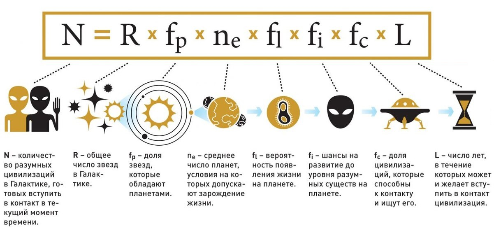

Домашнее задание. Рассказ на свободную тему
текст взят с сайта Hi-News.ru
Могла ли на Земле быть другая развитая цивилизация до нас?
В истории Земли люди единственные, кто развил технику, автоматизацию, электричество и массовые коммуникации — отличительные признаки промышленной цивилизации.
Но что, если на Земле миллионы лет назад существовала еще одна индустриальная цивилизация? Сможем ли мы найти доказательства этому в геологической летописи?
Изучая влияние человеческой цивилизации на Землю, ученые примерно представили, как можно было бы найти такую цивилизацию и как это может повлиять на поиск внеземной жизни.
 Как они отмечают в своем исследовании, поиск жизни на других планетах часто требует поиска земных аналогов, чтобы понять, при каких обстоятельствах жизнь
Как они отмечают в своем исследовании, поиск жизни на других планетах часто требует поиска земных аналогов, чтобы понять, при каких обстоятельствах жизнь
могла бы существовать в принципе. И все же наряду с этим мы пытаемся найти разумную внеземную жизнь, которая могла бы с нами связаться. Предполагается,
что любая подобная цивилизация должна сперва разработать промышленную основу.
Уравнение Дрейка
Формула, предназначенная для определения числа внеземных цивилизаций в Галактике, с которыми у человечества есть шанс вступить в контакт
Сформулирована доктором Фрэнком Дональдом Дрейком (профессором астрономии и астрофизики калифорнийского университета Santa Cruz) в 1960 году.

N — количество цивилизаций, с которыми у нас есть шанс вступить в контакт
R — скорость формирования звёзд в нашей галактике (сколько звёзд в год образуется?)
fp — доля звёзд, обладающих планетами
ne — среднее количество планет (и спутников) с подходящими условиями на одну звезду, обладающую планетами
fl — вероятность зарождения жизни на планете с подходящими условиями
fi — вероятность возникновения разумных форм жизни на планете, на которой есть жизнь
fc — отношение количества планет, разумные жители которых способны к контакту и ищут его,
к количеству планет, на которых есть разумная жизнь
L — время жизни такой цивилизации (то есть время, в течение которого цивилизация существует,
способна вступить в контакт и хочет вступить в контакт)
Два важнейших аспекта уравнения Дрейка, которые напрямую определяют возможность найти жизнь где-нибудь в галактике,
— это огромное число звезд и планет, а также количество времени, которое было отведено жизни на развитие.
До сих пор предполагалось, что хотя бы одна планета должна была дать начало разумному виду, который научится
создавать технологии и средства связи.
ТОП-7 планет, подходящих для колонизации
7. место. Меркурий
6. место. Kepler-438 b
5. место. Проксима Центавра b
4. место. Луна
3. место. Венера
2. место. Титан
1. место. Марс